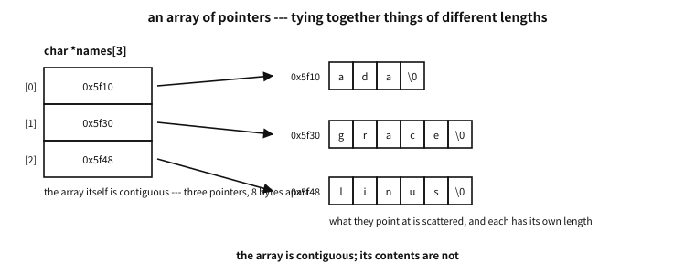
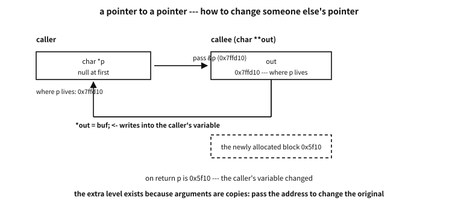

41 Arrays and pointers — when they are the same and when they are not
What to know first
sizeofLooking back
Chapter 39 taught that “the name of an array decays into the address of its first element”, and chapter 40 that a 2-D array parameter becomes int (*)[N]. Having learned both, can you answer “are an array and a pointer the same thing” in one sentence?
A. Not yet. And that is why this chapter exists. So far we have learned, one at a time, the places where decay happens. But what causes accidents in the field is the opposite — the places where it does not, and what was lost once it did. The pieces are all gathered; it is time to close them into one picture.
The need for this chapter, and its context
By the end of this chapter
The questions this chapter answers
- If rule ③ turns
int p[5]into a pointer anyway, does the[5]mean nothing? - The idiom
sizeof arr / sizeof arr[0]for counting elements is everywhere. I hear there are cases where it is dangerous. - Then are
void f(int m[][3])andvoid f(int (*m)[3])completely the same?
41.1 Why this chapter has to exist#
First, why this chapter remains after the previous two. Not one piece of new syntax appears in it. What it does is gather what has already been learned into one place and close it as rules. Is that worth doing?
It is. Because “an array is a pointer” is the most widespread misunderstanding in C, and at the same time the one discovered latest.
41.1.1 Why the misunderstanding is so tough#
For a false sentence to spread it has to be true often. This one is exactly that.
char buf[64];
char *p = buf;
strlen(buf); /* works */
strlen(p); /* works */
printf("%s %s", buf, p); /* both work */
buf[3]; p[3]; /* both work */People learning C generally go in this order — write everything inside one function, then split into functions, and only at the end split into files. ★ Most of that road is spent in the one context where arrays and pointers really are interchangeable, because that context is the function argument. So hundreds of successes pile up before the first wrong place is ever met.
There is one more reason the two look identical to us. We have always seen main’s parameter written char *argv[] or char **argv at whim. That too works because it is a function parameter, but the context is invisible, and a false confidence grows: “C is consistent and regular about address arithmetic.”1
41.1.2 And discovery comes late#
Inside one file the compiler catches it. Use as a pointer something defined as an array and the types disagree, so it is an error at once. The trouble is when the files differ. Then the compiler cannot see both sides at once. §4 confirms it for real; here is the conclusion in advance — it compiles, it links, and it dies when it runs.
41.2 What differs — five axes#
Put arrays and pointers side by side and compare them on five axes: what each holds, how many steps an access takes, whether it has a name, whether it knows its size, and what it is mainly used for.
| Axis | Array | Pointer |
|---|---|---|
| What it holds | the data itself | the address of the data |
| Steps to reach it | the address is already known → one read | read the address first → then read again |
| Does it have a name | it is itself a named variable | what it points at is usually anonymous |
| Does it know its size | sizeof gives the whole size | sizeof gives the size of one address |
| Mainly used for | a fixed number of elements | dynamic structures, malloc/free |
Table 41.1 — The five axes that separate an array from a pointer
The third axis is especially interesting. Write int a[5]; and those twenty bytes carry the name a. Write int *p = malloc(20); and those twenty bytes have no name — the name p belongs to the eight bytes holding an address, not to the twenty bytes of data. Chapter 45’s point that things on the heap are nameless meets us again here.
examples-en/arrays-vs-pointers/arrptr.c
/* Split array and pointer apart in one place.
The point is how two values naming the same address behave differently. */
#include <stdio.h>
static int arr[5] = { 10, 20, 30, 40, 50 };
static int *ptr = arr; /* holds the decayed address */
static void by_param(int p[5]) /* writing [5] does not stop it being a pointer */
{
/* Today's compiler warns right here (-Wsizeof-array-argument).
The warning is right - we mute just that one to show the effect. */
#if defined(__GNUC__)
# pragma GCC diagnostic push
# pragma GCC diagnostic ignored "-Wsizeof-array-argument"
#endif
printf(" inside the function, sizeof p = %zu (one pointer)\n", sizeof p);
#if defined(__GNUC__)
# pragma GCC diagnostic pop
#endif
}
int main(void)
{
puts("(1) What does it hold? The size gives it away");
printf(" sizeof arr = %zu sizeof ptr = %zu\n", sizeof arr, sizeof ptr);
printf(" element count: sizeof arr / sizeof arr[0] = %zu\n",
sizeof arr / sizeof arr[0]);
puts("\n(2) Same address, different type - +1 steps by a different width");
printf(" arr = %p\n", (void *)arr);
printf(" &arr[0] = %p (the same)\n", (void *)&arr[0]);
printf(" &arr = %p (the same - but its type is int(*)[5])\n", (void *)&arr);
printf(" arr + 1 = %p (+%td bytes)\n",
(void *)(arr + 1), (char *)(arr + 1) - (char *)arr);
printf(" &arr + 1 = %p (+%td bytes - it steps over the whole array)\n",
(void *)(&arr + 1), (char *)(&arr + 1) - (char *)arr);
puts("\n(3) Which one can move");
ptr = ptr + 2; /* a pointer can move */
printf(" moving ptr two cells gives *ptr = %d\n", *ptr);
/* arr = ptr; <- an array name is not a modifiable lvalue: compile error */
ptr = arr;
puts("\n(4) A subscript is a pointer offset - so it may be reversed");
printf(" arr[3] = %d, *(arr + 3) = %d, 3[arr] = %d\n",
arr[3], *(arr + 3), 3[arr]);
puts("\n(5) Pass it to a function and the size disappears");
printf(" before the call, sizeof arr = %zu\n", sizeof arr);
by_param(arr);
return 0;
}
Output
(1) What does it hold? The size gives it away
sizeof arr = 20 sizeof ptr = 8
element count: sizeof arr / sizeof arr[0] = 5
(2) Same address, different type - +1 steps by a different width
arr = 0x5560b0ec7020
&arr[0] = 0x5560b0ec7020 (the same)
&arr = 0x5560b0ec7020 (the same - but its type is int(*)[5])
arr + 1 = 0x5560b0ec7024 (+4 bytes)
&arr + 1 = 0x5560b0ec7034 (+20 bytes - it steps over the whole array)
(3) Which one can move
moving ptr two cells gives *ptr = 30
(4) A subscript is a pointer offset - so it may be reversed
arr[3] = 40, *(arr + 3) = 40, 3[arr] = 40
(5) Pass it to a function and the size disappears
before the call, sizeof arr = 20
inside the function, sizeof p = 8 (one pointer)
Output ① is the first and fourth axes. sizeof arr is 20 and sizeof ptr is 8. Two values naming the same place answer differently when asked their own size.
② is the most valuable part. arr, &arr[0] and &arr are all the same address. Yet add 1 and they split.
arr + 1— oneintover, +4 bytes&arr + 1— the whole array over, +20 bytes
★ Same address, different type, different value. arr decayed into int *; &arr did not decay and is int (*)[5]. The declaration reading of chapter 69 pays here — read the two type names and you can see the difference.
③ is another face of the third axis. ptr can move; arr cannot. arr = ptr; is a compile error, because an array name is not a modifiable lvalue. The example leaves it in a comment.
41.3 Steps to reach it — this is the real difference#
The second of the five axes is the most fundamental. And you can see it. The very same x[i] is translated into different machine code for an array and for a pointer.
extern int a[];
extern int *p;
int via_array(int i) { return a[i]; }
int via_pointer(int i) { return p[i]; }Compiled with gcc -O2 -c and looked at with objdump -d (x86-64).
a[i] — array | p[i] — pointer |
|---|---|
movslq %edi,%rdi | ★ mov 0x0(%rip),%rax— reads the pointer value from memory |
lea 0x0(%rip),%rax — the array’s address is known at compile time | movslq %edi,%rdi |
mov (%rax,%rdi,4),%eax — read once | mov (%rax,%rdi,4),%eax — read again |
| memory accesses: 1 | memory accesses: 2 |
Table 41.2 — The number of steps an indexed access takes
★ The difference shows up as one instruction. The array side ends with a lea (address computation); in that same slot the pointer side has a mov — a read that fetches the pointer value out of memory. The array side has no such read at all, because the array’s address is fixed at compile time.
Two things follow.
First, why both extern char a[]; and extern char a[100]; work. The compiler only needs to make offsets from the start, so it need not know the total length. The dimensions other than the outermost, though, it must know — that is how it decides how many bytes to step (the rule from chapter 40).
Second, why the folklore says pointers beat arrays. It used to be held that a subscript inside a loop costs a multiply each time, so stepping a pointer is faster. ★ Today that folklore is mostly wrong. Subscripting is defined in terms of pointers, so an optimiser commonly turns the two into the same form; and the array side often carries clearer aliasing information, which helps vectorisation.
A common misconception. “In a loop, a pointer is faster than a subscript”
For the common shape of walking a one-dimensional array there is now almost no difference, for two reasons. First, the standard defines a[i] as *(a + i), so the compiler builds the same intermediate form from either. Second, the scaling multiply is a single shift when the element size is a power of two — and even that folds into the addressing mode ((%rax,%rdi,4)), which the mov (%rax,%rdi,4),%eax row of Table 41.2 shows for real.
There are conditions, though. If the element is a struct whose size is not a power of two, a real multiply remains; and where several pointers might refer to the same storage the compiler becomes conservative and reloads more often. The answer then is not “switch to pointers” but measure and decide, and give the compiler the aliasing information it lacks.
41.4 The accident that crosses a file boundary#
Now the place §1 promised. The definition is an array; the declaration says pointer.
/* def.c */ char msg[16] = "ABCDEFGHIJKLMNO";
/* use.c */ extern char *msg; /* <- a lie */
printf("%c", msg[0]);We compiled the two files separately, linked and ran them.
| Step | Result |
|---|---|
gcc -Wall -Wextra -c def.c use.c | ★ not one warning |
gcc -o mism def.o use.o | ★ not one warning |
./mism | Segmentation fault (exit status 139) |
Table 41.3 — What happens when the declarations disagree
What happened. use.c believes that an address lives at the place called msg. So it reads eight bytes there and uses them as an address. But what those eight bytes actually contain are the characters 'A'~'H'. Read little-endian they make the number 0x4847464544434241, and using that number as an address crashes the program.
★ Be precise about what is at fault here. The compiler did nothing wrong: looking at use.c alone, that code is perfectly right, and the linker joins names without knowing types. What was wrong was the promise a human made.
Counter-example. Writing declarations by hand and letting them drift from the definition
/* written out in each file that uses them */
extern char *msg;
extern int count;Write extern by hand in each file and the definition can change while those declarations do not. And as we just saw, nobody warns you.
There is only one cure — put the declaration in a header, once, and have the defining side include that header too. Then definition and declaration meet inside one translation unit and the compiler catches the mismatch (chapter 59).
/* msg.h */ extern char msg[16];
/* def.c */ #include "msg.h" <- the defining side includes it too. This line is the point
char msg[16] = "...";Keep that habit and this section’s accident cannot happen at all. C has no cross-file type checking, so we make the header play that role.
In practice. The same shape occurs outside arrays
Definitions drifting from declarations is not peculiar to arrays and pointers. Defining something as int and declaring it long, or omitting static so that two files define one name as two different things, has the same root — C’s structure of each translation unit believing separately.
Today’s tools do help. Turn on link-time optimisation and the compiler sees both translation units together, catching some mismatches; build the example above with -flto and a warning appears. But this is a backstop, not a replacement for the discipline. There is no reason to leave to an optimisation flag what one header would prevent.
41.5 When they do become the same — three rules#
Now the other direction. Here are the places where decay does happen, set down as rules with the standard’s clauses.
| Rule | Content |
|---|---|
| ① in an expression | an expression of array type is converted to a pointer to its first element, with a few exceptions (next section) |
| ② the subscript | a[i] is by definition *(a + i) — the subscript operator is a pointer offset |
| ③ the parameter | a function parameter declared “array of T” is rewritten as “pointer to T” |
Table 41.4 — The three rules by which an array becomes a pointer
What matters is where each rule is used.
Rule ① is what makes int *p = arr; legal, and why strlen(buf) works.
Rule ② is not notation but definition. So a[i] and *(a+i) are not “the same result” but “the same thing”. §7 shows an amusing consequence.
Rule ③ is the most often misread. It happens in the one context of a function parameter and nowhere else. Everywhere else an array declaration is an array declaration and a pointer declaration is a pointer declaration — §4’s accident is exactly what happens when that is not known.
Q. If rule ③ turns int p[5] into a pointer anyway, does the [5] mean nothing?
A. To the compiler it means nothing. Output ⑤ showed it — sizeof p is 8, one pointer, not five cells.
★ But two uses remain. The first is a signal to the reader: int table[] says “several elements follow here” and int *table does not. The second matters more: today’s compilers check this slot. Using sizeof p in the example raised -Wsizeof-array-argument, and we muted just that one warning to show the effect. Writing [5] tells the compiler “this person expects an array”, and it helps.
The [static N] notation from chapter 39 pushes this one step further into a promise that «at least N elements arrive». It is not that the size means nothing; more precisely, it means something outside the language’s type system.
41.6 The places that do not decay#
Rule ① has exceptions, and they matter enormously in practice. Knowing where decay does not happen is knowing what an array really is.
| Place | What it becomes | Why it matters |
|---|---|---|
sizeof arr | the whole array size | you can count the elements — after decay you cannot |
&arr | T (*)[N] — pointer to the array | &arr + 1 steps over the whole array |
typeof(arr) | T [N] as it stands (C23) | an array type can be copied verbatim |
| initialising from a string literal | char a[] = "..." makes a copy | ★ utterly unlike char *p = "..." |
Table 41.5 — The places decay does not happen
★ Those four are the standard’s whole list (C23 §6.3.2.1 p3). The absence of alignof is worth noting — that word takes only a type name (§6.5.4.4). Code that writes alignof(arr) does compile, but gcc says “ISO C does not allow alignof (expression)” and clang calls it “a GNU extension” — an extension, not the standard.
The last row of Table 41.5, initialising from a string literal, is especially important. Two lines that look almost the same do entirely different things.
char a[] = "gooseberry"; /* an array - mine, so I may change it */
char *p = "breadfruit"; /* merely points at a literal - changing it is undefined */a is my own array made by copying the literal’s contents. p merely points at a literal living somewhere in the program. So a[0] = 'G'; is fine and p[0] = 'B'; is undefined behaviour — the literal is usually placed in a read-only region, and the write crashes at run time (chapter 21).
Q. The idiom sizeof arr / sizeof arr[0] for counting elements is everywhere. I hear there are cases where it is dangerous.
A. There are. ★ That idiom is right only while arr really is an array. But inside a function, rule ③ has already made an array parameter a pointer. Use the same idiom there and you compute «pointer size ÷ element size» — always 2 for an int array on a 64-bit machine.
void f(int a[10]) {
size_t n = sizeof a / sizeof a[0]; /* 2, not 10 */
}So use the idiom only in the scope where the array was declared. Across a function boundary, C’s habit is to pass the length as a separate argument — and the places where that habit was skipped because it was tiresome are exactly the overflow vulnerabilities (chapter 43). The -Wsizeof-array-argument mentioned earlier aims at precisely this mistake.
41.7 Why 6[a] is legal#
Accept rule ② as a definition and an amusing consequence follows. If a[i] is *(a + i), then since addition commutes *(i + a) is the same thing, and hence so is i[a].
Output ④ confirmed it — arr[3], *(arr + 3) and 3[arr] are all 40.
There is no occasion to write this in real code. But it is worth knowing, because the very legality of the notation proves that the subscript is the syntax of pointers, not of arrays. Had [] been an array-only device, 3[arr] would have been nonsense.
A common misconception. “[] is an operator that attaches to arrays”
It is not. The left operand of [] is a pointer, and an array merely decays into that slot. That is why a pointer can be subscripted (p[3]), why things that are not arrays can be, and why the order may even be reversed.
Accept this and several things are explained at once. Why has C no subscript range checking — because there is no guarantee in the first place that a subscript is an array access. Why does p[-1] pass the grammar — because there is no reason an offset may not be negative. The language does not know what there would be to check.
41.8 Parameter conversion happens one layer only#
This is where people most often go wrong extending rule ③ to more dimensions. ★ An array of arrays does not become a “pointer to pointer”. It becomes a “pointer to array”.
examples-en/arrays-vs-pointers/params.c
/* The rewrite of array parameters into pointers applies to ONE layer only.
And since C99 you can pass the sizes and get a real 2-D parameter. */
#include <stdio.h>
/* (1) array of array -> pointer TO ARRAY (not pointer to pointer) */
static void take_2d(int (*m)[3], size_t rows)
{
printf(" int m[][3] -> int (*m)[3] : sizeof m = %zu, sizeof *m = %zu\n",
sizeof m, sizeof *m);
printf(" m[1][2] = %d (one row is %zu bytes)\n", m[1][2], sizeof *m);
(void)rows;
}
/* (2) array of pointer -> pointer to pointer (argv has this shape) */
static void take_argvish(char **v)
{
printf(" char *v[] -> char **v : v[0]=\"%s\", v[1]=\"%s\"\n", v[0], v[1]);
}
/* (3) since C99 - take the sizes first and the 2-D parameter really varies */
static long sum_2d(size_t rows, size_t cols, int m[rows][cols])
{
long s = 0;
for (size_t i = 0; i < rows; i++)
for (size_t j = 0; j < cols; j++)
s += m[i][j];
return s;
}
int main(void)
{
int grid[2][3] = { { 1, 2, 3 }, { 4, 5, 6 } };
int wide[2][4] = { { 1, 1, 1, 1 }, { 2, 2, 2, 2 } };
char *names[] = { "hana", "dul" };
puts("(1) pass an array of arrays");
take_2d(grid, 2);
puts("\n(2) pass an array of pointers");
take_argvish(names);
puts("\n(3) pass the sizes and one function takes both widths");
printf(" sum_2d(2,3,grid) = %ld\n", sum_2d(2, 3, grid));
printf(" sum_2d(2,4,wide) = %ld <- a shape take_2d cannot accept\n",
sum_2d(2, 4, wide));
return 0;
}
Output
(1) pass an array of arrays
int m[][3] -> int (*m)[3] : sizeof m = 8, sizeof *m = 12
m[1][2] = 6 (one row is 12 bytes)
(2) pass an array of pointers
char *v[] -> char **v : v[0]="hana", v[1]="dul"
(3) pass the sizes and one function takes both widths
sum_2d(2,3,grid) = 21
sum_2d(2,4,wide) = 12 <- a shape take_2d cannot accept
| What was passed | What the parameter becomes | How far it changed |
|---|---|---|
array of arrays char c[8][10] | char (*c)[10] — pointer to array | one layer |
array of pointers char *c[15] | char **c — pointer to pointer | one layer |
pointer to array char (*c)[64] | unchanged | not at all |
pointer to pointer char **c | unchanged | not at all |
Table 41.6 — In a parameter only the outer layer changes
Put the first two rows side by side and the rule is plain. Only the outermost layer becomes a pointer; the inside is untouched. Output ① is the proof — sizeof m is 8 (a pointer) while sizeof *m is 12, a row of three ints.
★ Now a long-standing puzzle resolves. Why is main’s second parameter char **argv? Because argv is an array of pointers (the second row). Had it been an array of arrays it would have become something like char (*argv)[15]. Output ② mimics exactly that shape.
Q. Then are void f(int m[][3]) and void f(int (*m)[3]) completely the same?
A. They are. Rule ③ rewrites the former into the latter. take_2d in the example used the latter notation because that is what it actually is, and people who use the former are conveying to a human reader that «several rows follow». Just as in chapter 40.
Watch the parentheses. int *m[3] is a different thing entirely — «an array of three pointers» — and in a parameter slot it is rewritten again, to int **m. Chapter 69’s precedence rule pays here.
41.9 Three working patterns — seen with addresses#
The rules are all out now. What remains is to see what shape they take in real code, addresses included. All three go past you several times a day.
examples-en/arrays-vs-pointers/ptr_shapes.c
/* What a pointer actually points at - printed as addresses.
The addresses themselves differ from run to run (ASLR); the *relations* never do:
the stride, which one points where, and one level versus two. */
#include <stddef.h>
#include <stdio.h>
#include <stdlib.h>
#include <string.h>
/* 1. An array of pointers vs a 2-D array - same data, different layout */
static void two_shapes(void)
{
/* array of pointers: three cells hold addresses; the text is scattered */
const char *names[] = { "ada", "grace", "linus" };
/* 2-D array: one block, every row the same width */
char table[3][8] = { "ada", "grace", "linus" };
printf(" names: sizeof = %zu (%zu cells x %zu)\n",
sizeof names, sizeof names / sizeof names[0], sizeof names[0]);
for (size_t i = 0; i < 3; i++)
printf(" names[%zu] -> %p \"%s\" (%zu bytes)\n",
i, (const void *)names[i], names[i], strlen(names[i]) + 1);
printf(" table: sizeof = %zu (%zu rows x %zu)\n",
sizeof table, sizeof table / sizeof table[0], sizeof table[0]);
for (size_t i = 0; i < 3; i++)
printf(" &table[%zu] = %p \"%s\" (step %td)\n",
i, (const void *)table[i], table[i],
i == 0 ? (ptrdiff_t)0 : table[i] - table[i - 1]);
}
/* 2. A pointer to a pointer - where someone else's pointer gets changed */
static int take_buffer(char **out, size_t n)
{
char *buf = malloc(n);
if (buf == NULL)
return -1; /* on failure, leave *out alone */
memset(buf, 'x', n - 1);
buf[n - 1] = '\0';
*out = buf; /* <- writes into the caller's variable */
return 0;
}
/* The same job with one level - only the copy changes, the original does not.
(It is read once to avoid a set-but-unused warning; that the written value
never leaves the function is precisely this function's point.) */
static void does_nothing(char *out, size_t n)
{
char *buf = malloc(n);
if (buf != NULL) {
memset(buf, 'y', n - 1);
buf[n - 1] = '\0';
out = buf; /* this assignment ends inside this function */
printf(" (inside: the local copy now points at %p)\n", (void *)out);
free(buf);
}
}
static void out_parameter(void)
{
char *p = NULL;
printf(" before the call: p = %p, and p lives at &p = %p\n",
(void *)p, (void *)&p);
does_nothing(p, 8);
printf(" after passing one level: p = %p (unchanged)\n", (void *)p);
if (take_buffer(&p, 8) == 0) {
printf(" after passing two levels: p = %p \"%s\"\n", (void *)p, p);
free(p);
}
}
/* 3. Sorting an array of pointers - the data stays, only the order changes */
static int by_text(const void *a, const void *b)
{
return strcmp(*(const char *const *)a, *(const char *const *)b);
}
static void sort_without_moving(void)
{
const char *v[] = { "linus", "ada", "grace" };
const void *before[3];
for (size_t i = 0; i < 3; i++)
before[i] = (const void *)v[i];
qsort(v, 3, sizeof v[0], by_text);
for (size_t i = 0; i < 3; i++) {
int moved = 1;
for (size_t j = 0; j < 3; j++)
if (before[j] == (const void *)v[i])
moved = 0;
printf(" v[%zu] -> %p \"%s\"%s\n", i, (const void *)v[i], v[i],
moved ? " (a new address?!)" : "");
}
puts(" the three addresses are the original ones - not one byte of text moved.");
}
int main(void)
{
printf("[an array of pointers vs a 2-D array]\n");
two_shapes();
printf("\n[a pointer to a pointer - changing the caller's variable]\n");
out_parameter();
printf("\n[sorting an array of pointers moves pointers, not data]\n");
sort_without_moving();
return 0;
}
Output
[an array of pointers vs a 2-D array]
names: sizeof = 24 (3 cells x 8)
names[0] -> 0x55d83d808008 "ada" (4 bytes)
names[1] -> 0x55d83d80800c "grace" (6 bytes)
names[2] -> 0x55d83d808012 "linus" (6 bytes)
table: sizeof = 24 (3 rows x 8)
&table[0] = 0x7ffeb1af1e30 "ada" (step 0)
&table[1] = 0x7ffeb1af1e38 "grace" (step 8)
&table[2] = 0x7ffeb1af1e40 "linus" (step 8)
[a pointer to a pointer - changing the caller's variable]
before the call: p = (nil), and p lives at &p = 0x7ffeb1af1e78
(inside: the local copy now points at 0x55d8471916b0)
after passing one level: p = (nil) (unchanged)
after passing two levels: p = 0x55d8471916b0 "xxxxxxx"
[sorting an array of pointers moves pointers, not data]
v[0] -> 0x55d83d808008 "ada"
v[1] -> 0x55d83d80800c "grace"
v[2] -> 0x55d83d808012 "linus"
the three addresses are the original ones - not one byte of text moved.
41.9.1 1. An array of pointers — tying together things of different lengths#
const char *names[3] and char table[3][8] hold the same three words with completely different layouts.

Figure 41.1 — An array of pointers — the array itself is contiguous, what it points at is scattered.
The numbers the listing printed are gathered in Table 41.7.
| What | const char *names[3] | char table[3][8] |
|---|---|---|
| what a cell holds | three addresses, 8 bytes each | the characters themselves, three 8-byte rows |
sizeof | 24 — the size of the addresses | 24 — row width × row count |
| where the text lives | scattered — outside the array, where the literals sit. The three addresses in the listing were 4 and 6 bytes apart, the sizes of the words | flush inside the array — the stride is exactly 8 |
| length | each its own. Long names fit too | the row width is the ceiling; nine characters do not fit |
| swapping two rows | change one pointer | copy the characters wholesale |
| editing the text | if they are literals you cannot (chapter 21) | you can — it is your own array |
Table 41.7 — The same three words, two layouts
The rule of thumb reduces to one line — if the contents never change and the lengths differ, an array of pointers; if you will edit them and the lengths are all alike, a 2-D array. argv is the former (chapter 59); a fixed-width table is the latter.
The listing’s third group shows what an array of pointers is really worth. Three words were sorted with qsort and not one byte of text moved — only the order of three addresses changed. The bigger the data and the more frequent the comparisons, the more that difference matters.
41.9.2 2. A pointer to a pointer — where someone else’s pointer is changed#
char ** feels strange mostly because “why one more level?” goes unanswered. The answer is already in chapter 34 — arguments are copies.

Figure 41.2 — To change the caller’s pointer you must pass the place where that pointer lives.
The listing’s second group prints both cases side by side: passing the pointer itself, and passing the place where it lives.
does_nothing(p, 8)— passed one level, the function gets a copy ofp. Put a new address in the copy and on returnpis still null.take_buffer(&p, 8)— pass&p(where the pointer lives) and the function writes into that place with*out = buf. On returnpholds the new address.
“To change a value, pass the place where it lives” is not a new rule. It is exactly the rule that had us pass int * to change an int (chapter 36), repeated one storey up.
| What you mean to change | The parameter | Inside the function |
|---|---|---|
an int value | int *n | *n = 5; |
| the contents a pointer points at | char *s | s[0] = 'A'; — no extra level needed |
| the pointer itself | char **out | *out = buf; |
| one cell of an array of pointers | char **v (a decayed array) | v[i] = buf; — same level, different meaning |
Table 41.8 — One more level for each thing you mean to change
The fourth row is the trap. The same type char ** serves both “please change my one pointer” and “here is an array of pointers”. The type does not separate them; names and documentation do — which is why output parameters are called out and arrays get plural names.
Counter-example. Touching *out on failure
A function with an output parameter owes two promises.
int take_buffer(char **out, size_t n); /* 0 means *out was filled in */- On success it writes
*out. - On failure it leaves
*outalone. That is why the listing’stake_bufferreturns-1immediately whenmallocfails.
Without this rule the caller is left guessing between “it failed, so the old value is still there” and “it failed, so it must be null” — and double frees and null dereferences come out of that gap. It is the smallest case of failure atomicity (chapter 108).
41.9.3 3. Changing the order without moving the data#
Put the first two patterns, the array of pointers and the pointer to a pointer, together and a large working pattern appears — leave the data where it is and handle only pointers. Sorting is the classic case (the listing’s third group), and indexes, catalogues and priority queues all rest on the same idea. The price is chapter 12’s locality: every pointer followed is a jump to a scattered place, so when the data is small, moving it wholesale can be faster.
41.10 Passing multidimensional arrays of any size — what C could not do, and what C99 half-solved#
Knowing all the rules above, one of C’s old limits emerges as a logical consequence.
There was (for a long time) no general way to pass a multidimensional array of arbitrary size to a function. The reason is exactly what §8 showed: the parameter becomes a “pointer to array”, and to fix how far one step of that pointer moves, the inner dimension must be known at compile time.
So the function below accepts only arrays exactly three wide.
void take_2d(int (*m)[3], size_t rows); /* [2][3] and [999][3] are fine */
/* [2][4] is not */People have dodged this wall three ways, and all three cost something.
| Dodge | How | Cost |
|---|---|---|
| array of pointers | switch to char **, allocating each row | rows scatter, losing locality. more allocation and freeing |
| flattening | take one dimension and write m[i * cols + j] | ★ the index arithmetic is done by hand — easy to get wrong |
| fixing it | pin the width to one value | generality is given up |
Table 41.9 — The ways around passing a 2-D array of varying width
41.10.1 What C99 changed#
★ In 1999, C99 partly tore down the wall against passing multidimensional arrays of varying width. Take the sizes as earlier parameters and you may use those names as dimensions in the parameters that follow.
long sum_2d(size_t rows, size_t cols, int m[rows][cols]);Output ③ of params.c runs exactly this. One function takes [2][3] and [2][4] alike — impossible with take_2d. The inner dimension being known at run time, the compiler emits the right index arithmetic for you. You keep flattening’s benefit (contiguous memory) without its danger.
Platform note. Why C99’s variable-width array parameter is only half a solution
This notation uses the same machinery as the variable-length array (VLA), so conditions come with it.
First, C11 to C17 made it optional. An implementation could define __STDC_NO_VLA__ and not support it. C23 made the parameter form mandatory again — __STDC_NO_VLA__ now excuses only VLAs with automatic storage duration, the local arrays (§6.10.10.4). Second, MSVC does not support it. Microsoft’s C compiler has long refused the notation. Third, the Linux kernel removed VLAs (2018), on the grounds that stack usage could not be known statically.
★ There is a distinction to draw here, though. What the kernel objected to was «a local array whose size is decided at run time and taken from the stack», while what we used is «a parameter telling us how to view storage that already exists». The latter takes no stack. So where portability is not at stake, the parameter use is still worth recommending today.
Where portability is at stake, the answer remains flattening plus accessor functions. Confine the index arithmetic to one place and the danger shrinks (chapter 40’s flattening contract).
In practice. A verdict from 1994 and the answer in 2026
This limit was long counted among C’s signature weaknesses. In 1994 van der Linden pinned it down as an «inherent limitation of the C language», writing that it makes certain kinds of program — numerical analysis, say — much harder to write. The three dodges he listed are the three in the table above.2
★ What is interesting is that in the same book he noted, with unease, that «some people are now talking about adding Pascal’s conformant arrays to C». And five years later C99 added a feature pointing in exactly that direction.
So today’s accurate statement is this — the limit was real, the standard solved it, and the solution did not land in every implementation. Both “C cannot do this” and “C can now” are half-truths.
41.11 Accidents that decay causes — security and memory problems#
The rules of this chapter are not exam questions but a list of accidents. Here we gather, in five kinds, the accidents that come from what decay takes away — the length, and the knowledge that “this was an array”. If the five kinds of chapter 39 were accidents “at the moment the boundary is crossed”, these are accidents of getting where the boundary is wrong.
examples-en/arrays-vs-pointers/decay_bugs.c
#include <stdio.h>
#include <string.h>
#define COUNT(a) (sizeof (a) / sizeof (a)[0])
static size_t nonzero(const unsigned char *v, size_t n)
{
size_t k = 0;
for (size_t i = 0; i < n; i++)
k += v[i] != 0;
return k;
}
/* the wrong wipe: key is a parameter, so a pointer; sizeof key is its size */
static void wipe_wrong(unsigned char key[32])
{
#if defined(__GNUC__)
# pragma GCC diagnostic push
# pragma GCC diagnostic ignored "-Wsizeof-pointer-memaccess"
# pragma GCC diagnostic ignored "-Wsizeof-array-argument"
#endif
memset(key, 0, sizeof key);
#if defined(__GNUC__)
# pragma GCC diagnostic pop
#endif
}
/* the right wipe: the length comes separately */
static void wipe(unsigned char *key, size_t n)
{
memset(key, 0, n);
}
/* copies n elements --- n counts elements, not bytes */
static void copy_n(int *dst, const int *src, size_t n)
{
for (size_t i = 0; i < n; i++)
dst[i] = src[i];
}
int main(void)
{
unsigned char key[32];
puts("[1] wiping a secret through a decayed pointer");
memset(key, 'K', sizeof key);
wipe_wrong(key);
printf("after wipe_wrong: %zu of %zu bytes still secret\n",
nonzero(key, sizeof key), sizeof key);
wipe(key, sizeof key);
printf("after wipe : %zu of %zu bytes still secret\n",
nonzero(key, sizeof key), sizeof key);
puts("\n[2] bytes are not elements");
int src[16] = {0}, dst[16];
printf("sizeof dst = %zu (bytes) COUNT(dst) = %zu (elements)\n",
sizeof dst, COUNT(dst));
copy_n(dst, src, COUNT(dst)); /* copy_n(dst, src, sizeof dst) */
puts("copy_n(dst, src, COUNT(dst)) : 16 elements, in bounds");
printf("copy_n(dst, src, sizeof dst) would write %zu elements"
" into %zu\n", sizeof dst, COUNT(dst)); /* four times too many */
return 0;
}
Output
[1] wiping a secret through a decayed pointer
after wipe_wrong: 24 of 32 bytes still secret
after wipe : 0 of 32 bytes still secret
[2] bytes are not elements
sizeof dst = 64 (bytes) COUNT(dst) = 16 (elements)
copy_n(dst, src, COUNT(dst)) : 16 elements, in bounds
copy_n(dst, src, sizeof dst) would write 64 elements into 16
41.11.1 ① The sizeof mistake — a secret only partly wiped#
Wiping a cryptographic key or a password from memory after use is basic security code. But the moment that job is moved into a function, a trap appears.
void wipe_wrong(unsigned char key[32]) { memset(key, 0, sizeof key); }The parameter key is a pointer even though it says [32] (rule ③). sizeof key is 8, and only eight of the thirty-two bytes are wiped. The demo’s first group shows the result — “24 of 32 bytes still secret”. The program runs fine, and three quarters of a key we believed wiped stays in memory. If that memory later goes out through ⑤ (uninitialised arrays) or ③ (read overflow) of chapter 39, the key we thought was wiped leaks.
The compilers catch this shape well. Both warn.
gcc: warning: argument to ‘sizeof’ in ‘memset’ call is the same expression as
the destination; did you mean to provide an explicit length?
[-Wsizeof-pointer-memaccess]
clang: warning: 'memset' call operates on objects of type 'unsigned char' while the
size is based on a different type 'unsigned char *' [-Wsizeof-pointer-memaccess]The demo turns that warning off for a moment, to show the result. In real work, keep it on and never turn it off.
★ Wiping secrets has one more trap. Writing zeros with memset into an array whose lifetime is about to end is “a write that nobody reads afterwards”, so the optimiser may delete the write itself with the same observable result (chapter 14). Code that says “wiped” vanishes from the machine code. C23 brought in a function just for this job, memset_explicit — defined for the purpose of “making sensitive information inaccessible”, in a way the optimiser may not remove (§7.26.6.2).
41.11.2 ② Bytes versus elements — a fourfold overflow#
sizeof counts bytes, and most functions count elements. Mix the two and you overflow by a multiple of the element size.
int dst[16];
copy_n(dst, src, sizeof dst); /* passes 64 --- writes 64 elements */dst has sixteen elements, but sizeof dst is 64. If copy_n takes an element count, it writes four times too much (the demo’s second group). This book fed the shape to both compilers, and for a home-made copy_n both were silent. Whether a function takes bytes or elements lives only in its name and documentation. Clang caught only the case where the size given to the standard memcpy was plainly wrong.
clang: warning: 'memcpy' will always overflow; destination buffer has size 64,
but size argument is 256 [-Wfortify-source]Where this mix-up has most often become an accident is wide characters (wchar_t, chapter 85). Pass sizeof buf to a function that takes a character count and it believes the buffer holds 2 or 4 times as many characters as it really does. That is why Microsoft’s C library keeps a separate _countof macro to use instead of sizeof. The cure is in the names. Call a parameter that takes an element count count or n, and one that takes bytes size or bytes, and on the calling side use an expression that counts elements, like chapter 39’s COUNT.
41.11.3 ③ Returning the address of a local array#
An array cannot be returned by value (chapter 39). So code that tries to “return” one is usually written like this.
char *name(void)
{
char buf[16] = "temp";
return buf; /* buf decays to an address --- one about to vanish */
}In return buf the array decays to the address of its first element, and the moment the function ends, buf’s lifetime ends too. What the caller receives is the address of a place that already belongs to someone else. Both compilers point at this shape.
gcc: warning: function returns address of local variable [-Wreturn-local-addr]
clang: warning: address of stack memory associated with local variable 'buf'
returned [-Wreturn-stack-address]The warnings catch only this obvious shape. If the address leaves through a structure or another pointer, they miss it. Why that place becomes someone else’s we see with the stack in chapter 45. There are three cures — have the caller provide the container and pass it in (the most common), extend the lifetime with dynamic allocation and document who frees it (chapter 46), or put the array in a structure and return it by value (chapter 47).
41.11.4 ④ Pointer arrays that rely on an end marker#
Arrays of pointers often mark their end with a null pointer at the last slot instead of carrying a length. argv does — the standard guarantees that argv[argc] is a null pointer (§5.1.2.3.2). That is why for (char **p = argv; *p; p++) is safe.
Use the same convention on a home-made array and forget the end marker, and the loop does not stop at the array’s end. It reads the 8 bytes past it as an address and, if they are not zero, follows it — chapter 39’s read overflow and this chapter’s “accident across files” (following an integer as an address) happen at once. To protect an array with an end marker, make a habit of writing nullptr last in the initializer list, and where possible design it to pass the length too.
41.11.5 ⑤ The file boundary — the accident seen earlier#
The accident where the definition is an array and the declaration a pointer (“the accident across files”, above) belongs on this list too. That one crashed following an integer as an address, but when the same mismatch does not crash and writes somewhere else instead, it becomes memory corruption that is far harder to find. The cure is the one above — the declaration goes in a header once, and the defining file includes that header too.
| Accident | What was lost | Cure |
|---|---|---|
① the sizeof mistake | the length | take the length separately · never turn off -Wsizeof-pointer-memaccess · memset_explicit for secrets |
| ② bytes versus elements | the unit | put the unit in the parameter name · count elements with COUNT |
| ③ address of a local array | the lifetime | caller passes the container · dynamic allocation · wrap in a structure and return by value |
| ④ missing end marker | the length | nullptr last · the length too where possible |
| ⑤ mismatch across files | knowing it was an array | declaration once in a header, included by the defining file too |
Table 41.10 — Accidents caused by decay and their cures
41.12 Choosing between an array and a pointer — judgement in practice#
| When | Use this |
|---|---|
| the count is fixed at compile time | an array. sizeof can count it and there is no allocating or freeing |
| the count is decided at run time | pointer + malloc. And carry the length along with it |
| passing to a function | whichever you use, pass the length separately. The parameter is a pointer regardless |
| a read-only string | const char *. If it is to be changed, make a copy with char a[] |
| 2-D with a fixed width | a T (*)[N] parameter |
| 2-D with a varying width | T m[rows][cols] (where portability allows) or flattening plus accessors |
Table 41.11 — Choosing between array and pointer for the job
Recap
| to remember | the point |
|---|---|
| root of the “an array is a pointer” misunderstanding | a learning path that drills the interchangeable context (function arguments) most |
| five axes | what is held / steps to reach / name / size / use |
| the real difference | ★ array = 1 memory access, pointer = 2 — visible in the assembly |
| the file boundary | definition T a[] / declaration T *a → compiles, links, dies at run time |
| the cure for the file-boundary accident | declare once in a header. The defining side includes it too |
| three rules | decay in an expression / subscript = offset / parameter rewriting |
| where decay does not happen | sizeof, typeof, &, string-literal initialisation — not alignof |
6[a] | legal — proof that the subscript is the pointer’s syntax |
| parameter conversion | ★ one layer only. array of array → pointer to array |
char **argv | because argv is an array of pointers |
| C’s old limit | arbitrary multidimensional parameters — C99 solved it with m[rows][cols] (MSVC excepted) |
| Accidents of decay | the sizeof mistake · bytes vs elements · address of a local array · missing end marker · file boundary |
Table 41.12 — Arrays and pointers — what to remember
We have closed the relation between arrays and pointers into rules. The next chapter builds loops on top of that relation — nested loops, how to get out of them, and making a block for a macro.
Notes
- The diagnosis that the learning path hardens this misunderstanding, and the seed of the five-axis contrast and the parameter conversion table below, come from Peter van der Linden, Expert C Programming: Deep C Secrets (Prentice Hall, 1994). The choice of items, the examples and the measurements are this book’s own. ↩
- van der Linden, Expert C Programming — the passage on passing multidimensional arrays to functions. It is striking that he chose to show four attempts and admit that every one falls short. ↩